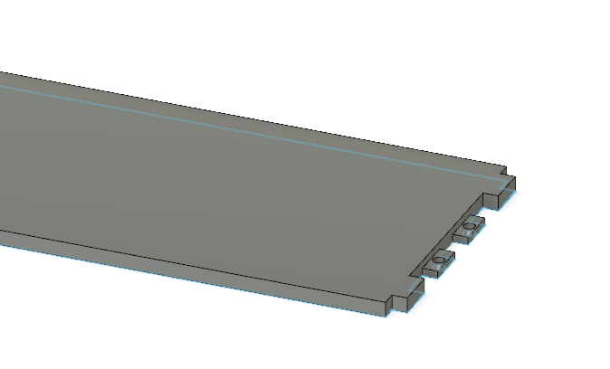
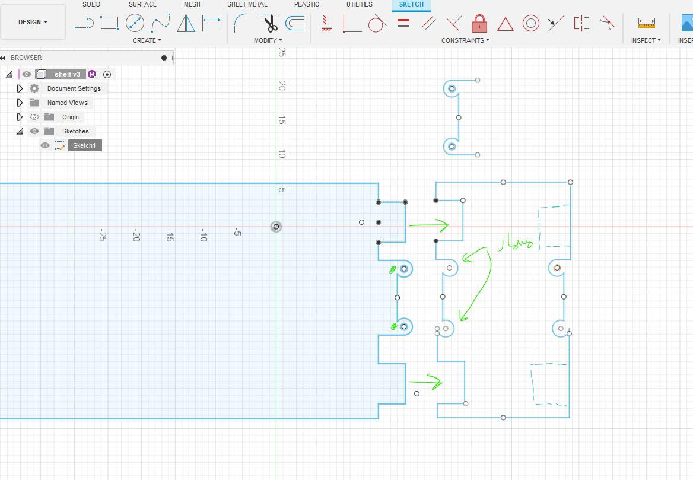

My Task:-
My task was the shelf, designing it with some qualities....
- make a place for joints for other shelfs to be connected
- make grooves for other equipments to be put on top of it
- make places for joints downside for other parts to be connected
--------- The Process ---------
Step1 | Drafting & Testing
we start designing on cad apps and making a test version of our thoughts of the project and thinking more for designing the joints between shelfs
and for the 3d test on fusion 360 of the joints


and anothor design for the joints